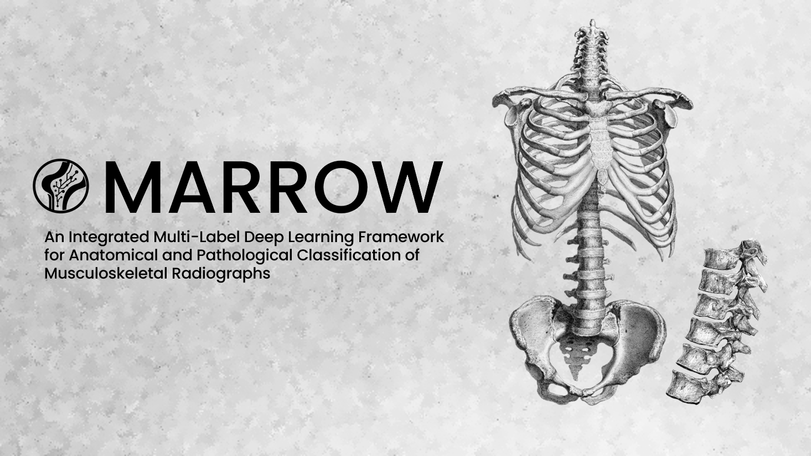
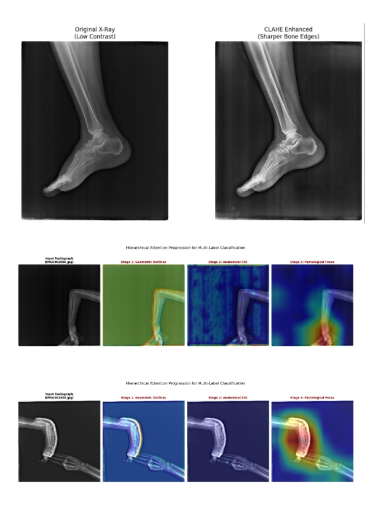

WHAT IS
MARROW
AI
"WHEN ARCHITECTURAL EFFICIENCY IS MERGED WITH CLINICAL CONTEXT, A TOOL IS MADE WHICH JUST DOESN'T 'SEE' BROKEN BONES - IT UNDERSTANDS THEM."
circle THE FRAMEWORK
“ An integrated multi-label diagnostic framework. It shifts the narrative from binary "Fracture or Healthy" to contextual triage by classifying 11 unique anatomical and pathological labels.
Using DenseNet121 as its neural engine, it leverages a Hybrid Ensemble layer with a Random Forest meta-classifier to emulate the diagnostic process of expert radiologists.
Technical Analysis:
Contrast Limited Adaptive Histogram Equalization (CLAHE) clarifies hairline fractures, while Grad-CAM provides a visual "sanity check" by highlighting the exact pixels triggering the diagnosis.

CLAHE VISION
Enhancing dynamic range via contextual tiles to reveal subtle cortical breaks obscured in standard X-rays.
DENSENET121
Leveraging feature concatenation for optimal gradient flow and parameter efficiency on the FracAtlas dataset.
GRAD-CAM XAI
Providing an explainable clinical heartbeat by translating network attention into verifiable spatial heatmaps.
ACCESS THE MODEL
Download the source code and deploy the DenseNet121 fracture detection model locally.
Model Deployment Instructions
- Download the Collab Notebook using the button above.
- Open Google Colab or Jupyter Notebook in your browser.
- Upload and open the downloaded .ipynb file.
- Ensure you have the required .keras or weights file uploaded to your environment.
- Run the cells sequentially to initialize the DenseNet121 architecture and start inferencing.